السلسلة 107
السيارة (صنف B) · 25 سؤال بالصوت. حاول تجاوب بوحدك، من بعد شوف الجواب.
السؤال 1

بيّن الجواب
الجواب الصحيح: 3
هذا العلامة ديال الخطر.
كتعلم انا الطريق غادي تضياق من ليسر .
السؤال 2
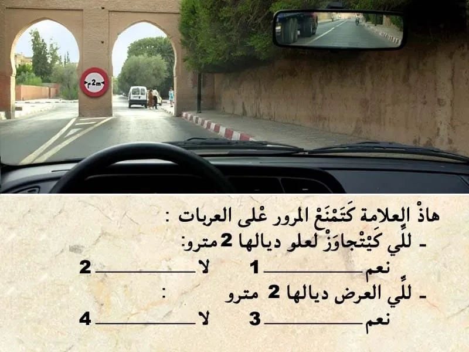
بيّن الجواب
الجواب الصحيح: 2 و 4
هذا العلامة ديال المنع.
- كتمنع المرور على العربات لي "كيتجاوز" العرض ديالها 2 متر.
⛔ العلامة كتخص العرض و ليس العلو
💥💥 في السؤال قال ليك لي العرض ديالها 2 متر.
ما قاولوش ليك لي "كيتجاوز " العرض. ركز مزيان .
السؤال 3

بيّن الجواب
الجواب الصحيح: 2
هذا العلامة ديال الإرشاد. عبار عن سهم باللون الاصفر الى اليسار.
- يعني تشوير مؤقت . مؤقتا الطريق لي كتمشي للرباط على ليسر
- واش واجب عليا نغير الإتجاه على ليسر . لا . ماشي علامة ديال الاجبار باش ندور على ليسر في هذا ملتقى الطرق.
السؤال 4
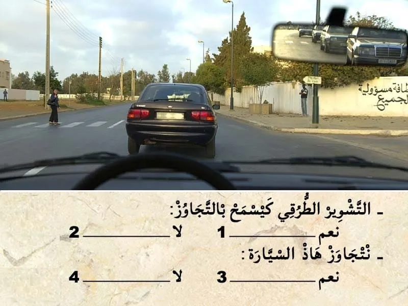
بيّن الجواب
الجواب الصحيح: 1 و 4
التشوير الطرقي فيه خط متقطع . كيسمح بالتجاوز .
و لكن ممر الراجلين فيه هذا السيدة لي قاطعة الطريق و بالتالي ما يمكنش لي نتجاوز الآن.
السؤال 5
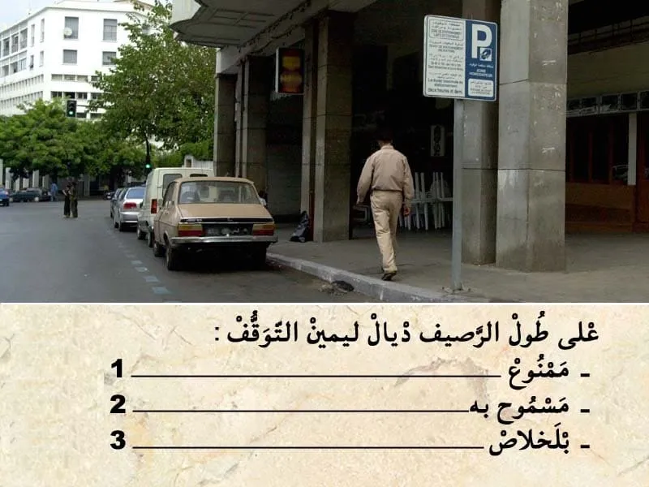
بيّن الجواب
الجواب الصحيح: 2 و 3
هذا العلامة ديال الإرشاد.
كتعلم على أن التوقف بالاداء .
و بما ان التوقف بالخلاص يعني التوقف مسموح بيه.
السؤال 6
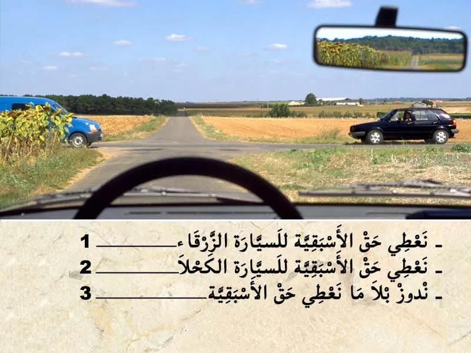
بيّن الجواب
الجواب الصحيح: 2
فهذا ملتقى الطرق بغياب التشوير الطرقي . الأسبقية للي جاي من جهت ليمن .
فهذا الحالة لي ليمن ديالو خاوي يدوز الاول.
في هذا الحالة نعطي حق الأسبقية للسيارة الكحلا.
السؤال 7
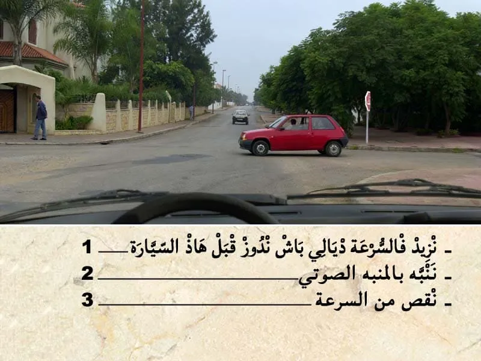
بيّن الجواب
الجواب الصحيح: 3
في هذا الحالة هذا السيارة الحمرة واقفة و بالتالي نقص من السرعة و ندوز .
السؤال 8
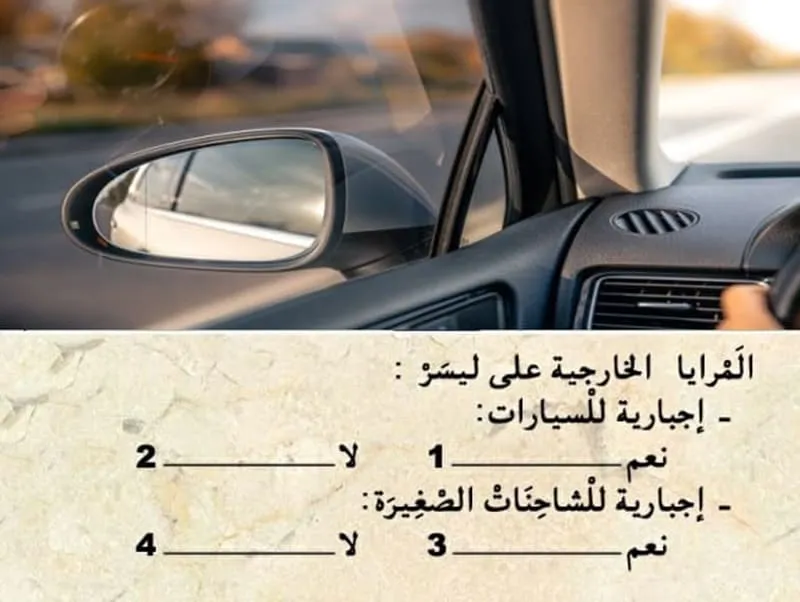
بيّن الجواب
الجواب الصحيح: 1 و 3
المراية الخارجية على ليسر إجبارية للسيارات و جميع الاصناف الأخرى.
السؤال 9
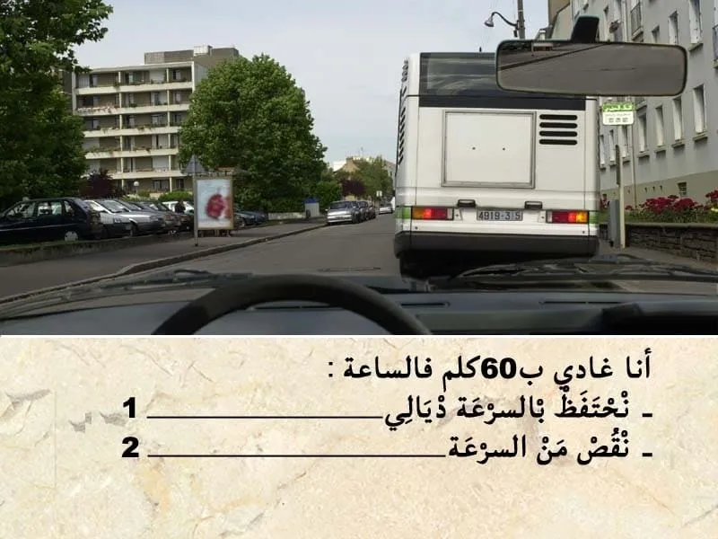
بيّن الجواب
الجواب الصحيح: 2
في هذا الحالة كاين هذا الحافلة قدامي واقفة . و بالتالي كاين احتمال ديال خطر . شي راكب ينزل و يقطع الطريق و بالتالي من الواجب عليا ننقص من السرعة.
السؤال 10
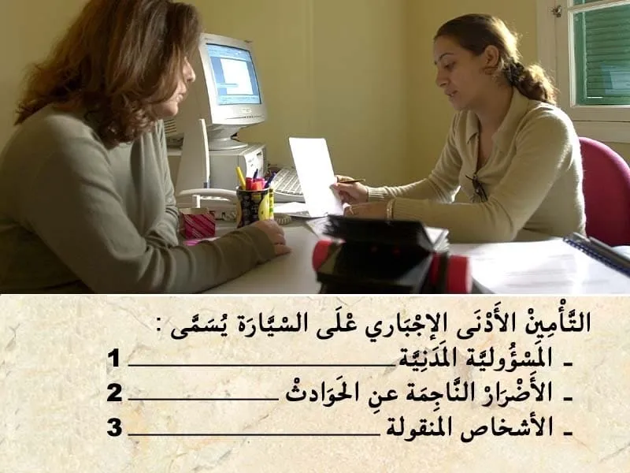
بيّن الجواب
الجواب الصحيح: 1
تأمين المسؤولية المدنية "الطرف الثالث" ꓽ
✔ يعتبر تأمين الطرف الثالث أبسط صيغة للتأمين وأقلها تكلفة مالية.
✔ يتعين على جميع مالكي المركبات بموجب القانون تحمل تأمين المسؤولية المدنية "طرف ثالث" على الأقل لحماية مستعملي الطريق الآخرين.
✔ يغطي تأمين مسؤولية المركبات تكاليف الأضرار المادية والإصابات الجسدية التي تلحق بطرف ثالث والتي قد يكون السائق مسؤولاً عنها.
السؤال 11
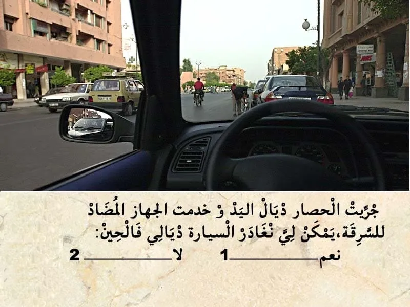
بيّن الجواب
الجواب الصحيح: 2
في هذا الحالة . انا متوقف.
و لكن ليسر ديالي عامر في المرآة جاية سيارة في جنبي و بالتالي ما يمكنش لي نغادر السيارة ديالي فالحين.
السؤال 12
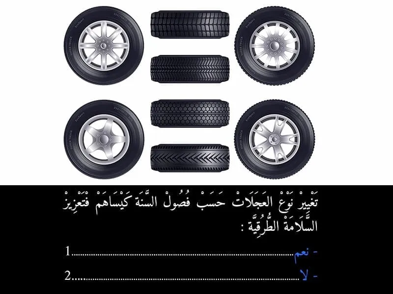
بيّن الجواب
الجواب الصحيح: 1
الإطارات الصيفية الإطارات التي يجب استعمالها عندما لا تكون حالة الطريق شتوية.
- الإطارات الشتوية:
- الإطارات المدببة = تماسك جيد على الثلج والطريق المجمد، ولكنها تتلف الطرق.
-الإطارات الاحتكاكية = تماسك جيد على الثلج وأقل على الطريق المجمد، تتلف الطرق بصورة أقل.
ما يختلف بين الإطارات الصيفية والإطارات الشتوية هي الأخاديد والتركيب.
إذا استعملت الإطارات الصيفية في فصل الشتاء فيمكن أن يصبح المطاط الصيفي الحساس صلباً وبالتالي تسوء خصائصه.
السؤال 13

بيّن الجواب
الجواب الصحيح: 2
سياقة مركبة برخصة سياقة مزورة كتعتبر جنحة و كيتعاقب السائق بعقوبة بالحبس لمدة 3 سنين على الأقصى.
السؤال 14

بيّن الجواب
الجواب الصحيح: 3
هذا العلامة . هي علامة ديال الخطر .
- كتعلم على انا هذا الطريق كتزلق . هناك خطر إنزلاق العربة.
و بالتالي الجواب الصحيح هو رقم 3.
السؤال 15
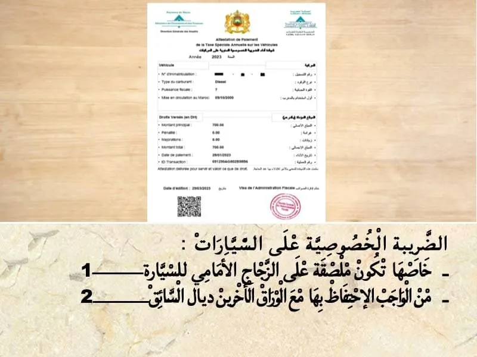
بيّن الجواب
الجواب الصحيح: 2
الضريبة الخصوصية على السيارات. من الواجب تكون الأوراق ديال السيارة و يجب الإدلاء بها عند كل مراقبة.
السؤال 16
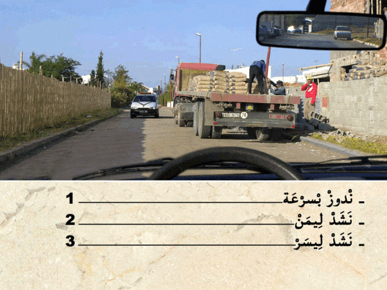
بيّن الجواب
الجواب الصحيح: 2
في هذا كاين الشاحنة هذا معمرة المسلك ديالي و بالإضافة للسيارة لي جاية قبالتي .
هي عربة دات الأولوية.
و بالتالي واجب عليا نشد ليمن و نعطيها حق الأسبقية.
السؤال 17
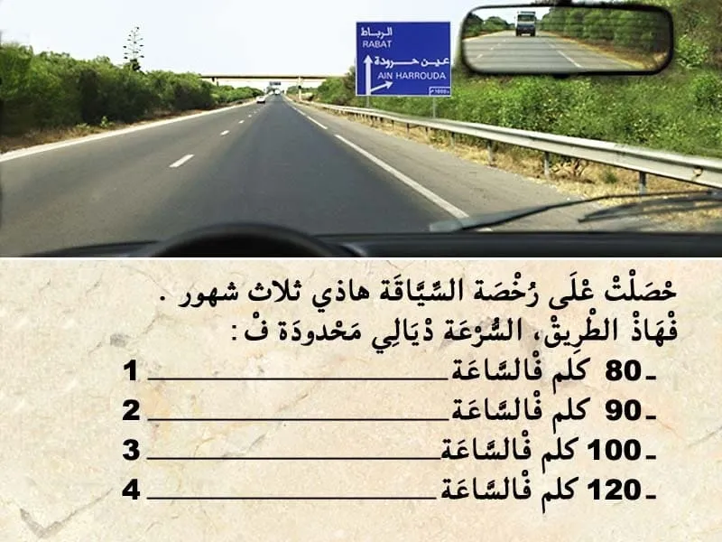
بيّن الجواب
الجواب الصحيح: 2
عندنا التشوير الطرقي و الحواجز و الخط المتاصل اقصى اليمين .
كيدل على أن هذا الطريق هي طريق سيار.
✅ و بالتالي السرعة محدودة في 120 كلم في الساعة.
لكن هنا انا حصلت على رخصة السياقة هذي ثلاثة شهور و بالتالي مزال في الفترة الإختبارية،يعني السرعة ديالي في هذا الطريق محدودة في 90 كلم في الساعة.
السؤال 18
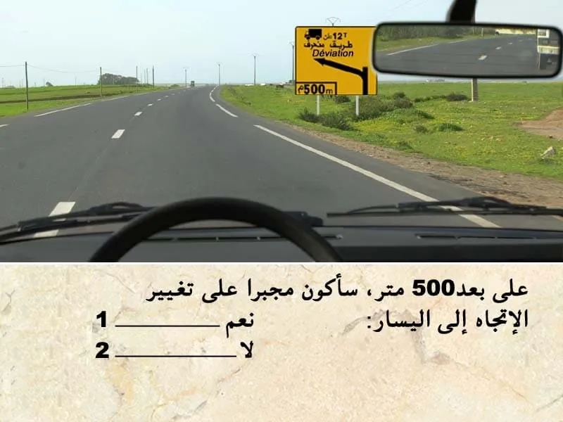
بيّن الجواب
الجواب الصحيح: 2
التشوير الطرقي كيضم علامة ديال الإرشاد باللون الاصفر.
يعني "تشوير مؤقت ".
- كيعلم على طريق منحرف على بعد 500 متر . بالنسبة الشاحنات.
و بالتالي يمكن لي نكمل السير للقدام الا كنت كنسوق سيارة.
السؤال 19
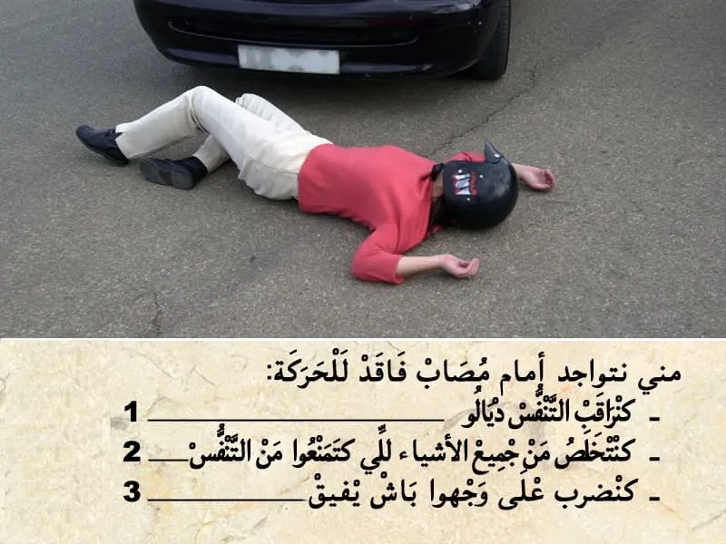
بيّن الجواب
الجواب الصحيح: 1 و 2
إغاثة الجرحى :
💡 في جميع الحالات يجب:
✔ إزالة الأشياء التي تعيق التنفس بالنسبة للمصاب؛
✔ تغطية الضحايا وكذا الجرحى لتفادي البرد؛
✔ التكلم مع المصابين والاطمئنان على حالتهم و التهدئة من روعهم ومحاولة إبقائهم في حالة وعي.
💡 في حالة التوفر على شهادة للإسعافات الأولية يجب :
✔ وضع المصاب على الجانب الأيمن وفي الوضعية الصحيحة (الوضعية الجانبية للسلامة أو وضعية الإفاقة)؛
✔القيام بعملية التنفس الاصطناعي إذا اقتضت الضرورة ذلك.
يقدر عدد النفخات بالنسبة للبالغين من 12 إلى 15 نفخة في الدقيقة مقابل 24 إلى 30 نفخة في الدقيقة بالنسبة للأطفال.
السؤال 20
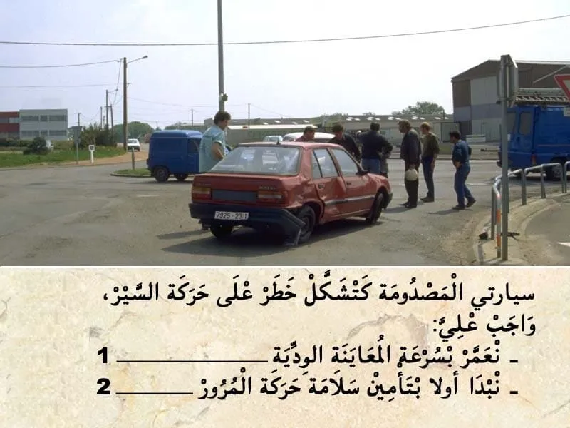
بيّن الجواب
الجواب الصحيح: 2
اول حاجة منين نتعرض لحادثة من الواجب نبدا اولا بتأمين سلامة حركة المرور .
و نحمي مكان الحادثة و نبه ليه.
السؤال 21
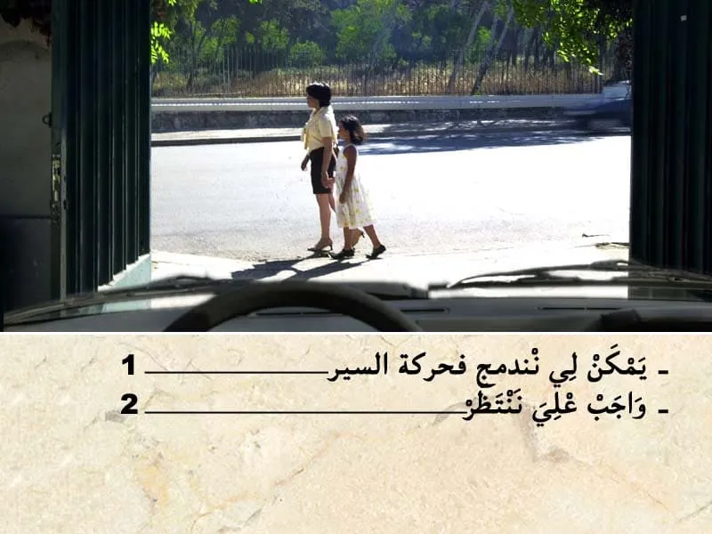
بيّن الجواب
الجواب الصحيح: 2
في هذا الحالة انا خارج من الكراج و بالتالي واجب عليا نعطي حق الأسبقية لهذا الراجلين.
السؤال 22

بيّن الجواب
الجواب الصحيح: 2
في علبة الادوية كيدل المستويات على نوع الخط :
- كيدل المستوى 1 على انني قبل ما نقوم بالسياقة واجب عليا نقوم بقراءة النشرة الدوائية.
- كيدل المستوى 2 على انه قبل ما نقوم بالسياقة
من الواجب عليا نستشر مع الطبيب او الصيدلي . باش نعرف واش يمكن لي نسوق الا خديث الدواء ولا لا.
- كيدل المستوى 3 على انه قبل ما نستأنف السياقة ,من الواجب عليا نستشر مع الطبيب فقط . باش نعرف واش يمكن لي نسوق الا خديث الدواء ولا لا.
يعني المستوى 3 فقط الطبيب هو لي يمكن ليه يعطيك الاذن باش تسوق.
السؤال 23
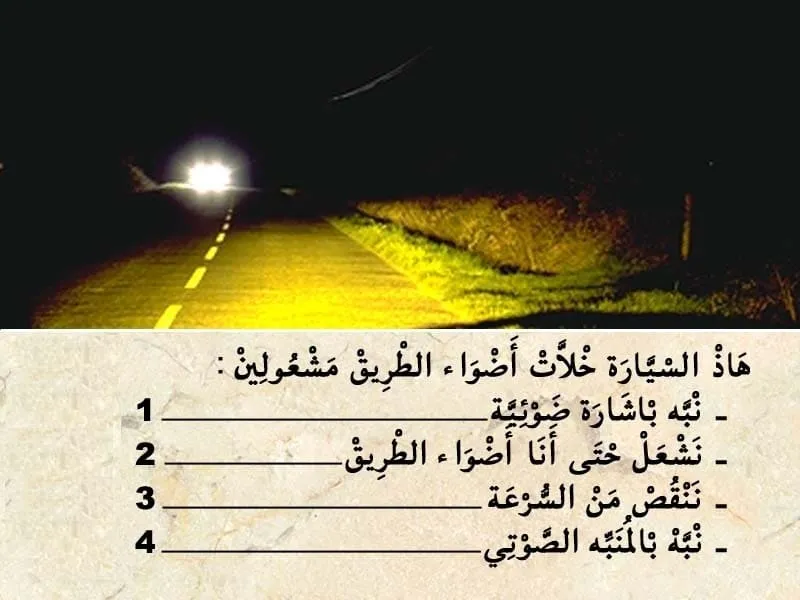
بيّن الجواب
الجواب الصحيح: 1 و 3
في هذا الحالة مستعمل الطريق لي قبالتي ضايقني باضواء الطريق.
✅ يمكن لي نبه بإشارة ضوئية بأضواء الطريق.
✅ ننقص من السرعة .
✅ نشد ليمن ديالي .
✅ نشوف في الجهة ديال ليمن من الطريق ديالي .
السؤال 24

بيّن الجواب
الجواب الصحيح: 1 و 3
هذا العلامة كتمنع التوقف على الطريق و حتى جنب الطريق. يعني ما يمكنش لي نوقف في الصف الثاني .
السؤال 25
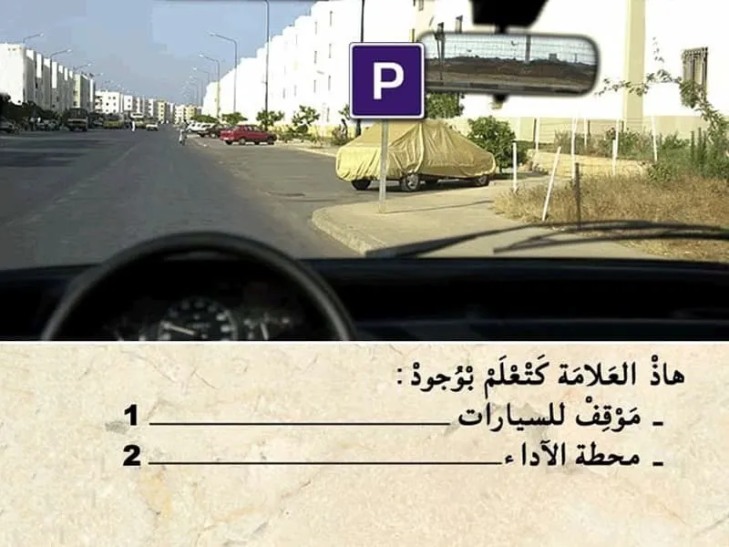
بيّن الجواب
الجواب الصحيح: 1
هذا العلامة ديال الإرشاد.
كتعلم على موقف خاص بالسيارات.